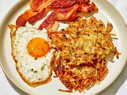

Hash Browns
Back to Home

Description
Delicious crispy hash browns made from grated potatoes, seasoned and fried to perfection.
Ingredients
- 2 large potatoes
- 1 small onion (optional)
- Salt to taste
- Black pepper to taste
- Oil for frying
Steps
- Peel and grate the potatoes using a box grater or food processor.
- If using, finely chop the onion.
- In a bowl, combine the grated potatoes, onion, salt, and pepper. Mix well.
- Heat oil in a frying pan over medium heat.
- Take a handful of the potato mixture and form it into a patty. Place it in the hot oil.
- Fry until golden brown on both sides (about 4-5 minutes per side).
- Remove from the pan and drain on paper towels to remove excess oil.
- Serve hot as a side dish or breakfast item.